워드프로세서-(구-1급) (2014-03-08 기출문제)
1과목: 워드프로세싱 일반
1. 다음 중 워드프로세서를 통하여 처리할 수 있는 기능으로 옳지 않은 것은?
- 작성한 문서를 인터넷 문서(*.htm)로 저장할 수 있다.
- 작성한 문서를 팩스로 보낼 수 있다.
- 필터 기능을 이용하여 작성한 문서에 있는 데이터들을 필터링 할 수 있다.
- 작성한 문서에 플래시 파일(*.swf)을 넣을 수 있다.
(정답률: 42%)

2. 다음 중 표시장치와 관련된 용어의 설명 중 옳은 것은?
- 해상도 : 화면의 선명도를 나타내는 것으로 ‘가로 픽셀수×세로 픽셀수’로 표시된다.
- 도트 피치(Dot Pitch) : 화면에서 줄과 줄 사이의 간격을 뜻하며, 간격이 좁을수록 선명한 이미지를 표현할 수 있다.
- 트루 컬러 : 화면을 구성하는 픽셀의 색상을 나타내는 것으로 64비트를 사용하여 표시한다.
- 화면 주사율 : 화면 재생빈도를 뜻하며, 높을수록 눈의 피로감이 증가한다.
(정답률: 50%)
3. 다음 중 KS X 1001 완성형 한글코드의 문자 입력 방법에 대한 설명으로 옳지 않은 것은?
- 특수 문자는 모두 2바이트로 구성된다.
- 한글 입력은 2벌식이나 3벌식 자판을 이용하여 입력한다.
- 영문자의 대/소문자의 입력은 [Caps Lock]키나 [Shift]키를 눌러 입력한다.
- 한자의 음(音)을 알고 있을 때에는 음절 단위 변환, 단어 단위 변환 등으로 입력한다.
(정답률: 57%)
4. 다음 중 아래 설명에 해당하는 문서의 형식은?
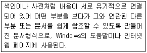
- 상용구
- 하이퍼텍스트
- 매크로
- 각주/미주
(정답률: 69%)
5. 다음 중 워드프로세서의 스타일(Style) 기능에 대한 설명으로 옳지 않은 것은?
- 긴 글에 대하여 일관성 있는 문단 모양을 유지하는데 유용하다.
- 스타일 유형을 추가, 삭제, 수정할 수 있다.
- 문서에서 자주 사용하는 기능들을 특정 키(바로 가기 키)에 기억시켜두고 필요할 때 빠르게 수행할 수 있다.
- 글자 모양, 문단 모양, 문단 번호 등을 지정할 수 있다.
(정답률: 57%)
6. 다음 중 문단(Paragraph)에 대한 설명으로 옳지 않은 것은?
- 문단 위와 아래의 간격을 별도로 설정할 수 있다.
- 문단은 한 페이지에 오직 한 개만 존재할 수 있다.
- 두 개의 문단을 하나의 문단으로 합칠 수 있다.
- [Enter]키에 의해 문단이 생성되는 것을 강제 개행이라 한다.
(정답률: 70%)
7. 다음 중 메일머지에 대한 설명으로 옳지 않은 것은?
- 초청장, 안내장, 청첩장 등을 만들 경우에 효과적이다.
- 데이터 파일은 반드시 DBF 파일만 사용해야 한다.
- 본문 파일에 커서를 위치시킨 후 메일머지 기능을 실행한다.
- 본문 내용은 동일하지만 수신인이 다양할 때 사용한다.
(정답률: 66%)
8. 다음 중 워드프로세서의 삽입/수정/삭제 기능에 대한 설명으로 옳은 것은?
- 수정 상태에서 [Space Bar]키를 누르면 커서가 오른쪽으로 이동하면서 한 문자씩 삭제된다.
- 삽입 상태에서 새로운 내용을 입력하면 원래의 내용이 지워지면서 다른 내용이 입력된다.
- [Delete]키를 누르면 커서가 왼쪽으로 이동하면서 왼쪽 문자열이 한 문자씩 삭제된다.
- 수정 상태에서 새로운 내용을 입력하면 문서의 중간에 새로운 문자, 공백, 빈 줄 등이 추가 된다.
(정답률: 44%)
9. 다음 중 인쇄 용지에 대한 설명으로 옳지 않은 것은?
- 낱장 용지는 동일한 숫자일 경우 A판보다 B판이 크다.
- 공문서의 표준 규격은 A4(210mm × 297mm)이다.
- A판과 B판으로 나눈 용지의 가로 : 세로의 비는 1 : 3이다.
- 낱장 용지는 규격 번호가 클수록 면적이 작다.
(정답률: 71%)
10. 다음 중 기안문을 작성하는 방법으로 옳지 않은 것은?
- 문서에 다른 서식 등이 첨부되는 경우에는 본문의 내용이 끝난 줄 다음에 “첨부” 라고 표시한다.
- 기안문은 두문, 본문 및 결문으로 구성한다.
- 수신자가 없는 내부결재 문서인 경우에는 “내부결재”로 표시한다.
- 본문 내용의 마지막 글자에서 한 글자 띄우고 “끝” 표시를 한다.
(정답률: 41%)
11. 다음 중 워드프로세서의 편집 관련 용어에 대한 설명으로 옳은 것은?
- 마진(Margin) : 프린터에서 한 면 단위로 프린터용지를 위로 올리는 기능
- 영문균등(Justification) : 단어 사이의 간격을 조절하여 워드랩으로 인한 공백을 없애고 문장의 양쪽 끝을 맞추는 기능
- 홈베이스(Home Base) : 문서의 균형을 위해 비워두는 페이지의 상 ․ 하 ․ 좌 ․ 우 공백
- 옵션(Option) : 문단의 각 행 중에서 오른쪽 또는 왼쪽 끝열이 정렬되지 않은 상태
(정답률: 66%)
12. 다음 중 아래 설명에 해당하는 워드프로세서 용어는?
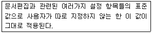
- 클립아트(Clip Art)
- 도구상자(Tool Box)
- 스풀링(Spooling)
- 디폴트(Default)
(정답률: 68%)
13. 다음 중 워드프로세서 작업 시 화면에 표시된 문서나 내용을 그 상태 그대로 프린터에 출력하는 기능은?
- 소프트 카피(Soft Copy)
- 하드 카피(Hard Copy)
- 라인 피드(Line Feed)
- 폼 피드(Form Feed)
(정답률: 57%)
14. 다음 중 공문서의 내용 표기에 대한 설명으로 옳지 않은 것은?
- 날짜를 표기할 때에는 숫자로 표기하되 연월일의 글자는 생략하고, 그 자리에 온점을 찍어 구분한다.
- 시간을 표기할 때에는 24시각제에 따라 숫자로 표기한다.
- 금액을 표기할 때에는 한글로 숫자를 표기하고, 괄호 안에 아라비아 숫자로 기재한다.
- 숫자를 표기할 때에는 특별한 사유가 없으면 아라비아 숫자로 표기한다.
(정답률: 68%)
15. 다음 중 공문서 항목 구분 시 넷째 항목의 항목 구분으로 사용할 수 있는 기호는?
- 가, 나, 다, ...
- 가), 나), 다), ...
- ㉮, ㉯, ㉰, ...
- (가), (나), (다), ...
(정답률: 59%)
16. 다음 중 전자출판에서의 필터링(Filtering)에 대한 설명으로 옳은 것은?
- 그림에 필터 효과를 적용하여 여러 가지 형태의 새로운 이미지로 바꿔주는 작업이다.
- 글자와 글자 사이의 간격을 미세하게 조정하는 작업이다.
- 미세한 점으로 사진을 나타내는 기법이다.
- 대상체의 컬러가 배경색의 컬러보다 옅어서 대상체가 보이지 않는 현상이다.
(정답률: 67%)
17. 다음 중 전자출판 매체의 제작에서 베타 테스트에 대한 설명으로 옳은 것은?
- 프로그래밍 과정 중 수시로 각각의 데이터와 프로그램들이 적절하게 작동하는지 확인하는 과정
- 초기 개발자들이 자신들이 개발한 전자출판 매체가 실제 활용에 이상이 없는지 확인하는 과정
- 독자층이나 이용자층과 유사한 외부 인력을 동원하여 실제 활용에 문제가 없는지 확인하는 과정
- 전자출판매체의 기획 단계에서 기획에 필수적인 다양한 자료들의 적합성을 확인하는 과정
(정답률: 52%)
18. 다음 중 커닝(Kerning)에 대한 설명으로 옳은 것은?
- 2개 이상의 이미지를 적절히 연결시켜 변환, 통합하는 기법이다.
- 실세계의 연속적인 도형을 표현할 때 매끄러운 직선이 거칠게 보이는 현상을 감소시키는 작업이다.
- 3차원 그래픽에서 그려진 물체의 각 면을 적절하게 색칠하고, 효과를 적용하여 화상의 실체감을 강조하는 작업이다.
- 글자와 글자 사이를 적절한 간격으로 조정하는 작업이다.
(정답률: 68%)
19. 다음 중 문서의 분량이 증가되는 교정 부호로만 묶인 것은?
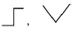
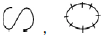
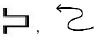
(정답률: 69%)
20. 다음 중 <보기 1>의 문장이 <보기 2>의 문장으로 수정되기 위해 필요한 교정 부호들로만 짝지어진 것은?
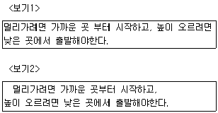
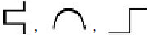
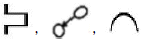
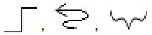
(정답률: 63%)
2과목: PC 운영 체제
21. 다음 중 한글 Windows 7의 특징에 해당하지 않는 것은?
- Aero Peek 기능 등 향상된 작업 표시줄 및 바탕 화면 미리 보기를 제공한다.
- 점프 목록을 사용하면 최근에 작업한 파일을 빠르게 찾을 수 있다.
- 장치 및 프린터라는 단일 위치에서 프린터, 전화 및 기타 장치를 연결, 관리 및 사용할 수 있다.
- 파일 이름은 세계 여러 문자와 모든 기호를 포함하여 최대 128자까지 지정할 수 있다.
(정답률: 57%)
22. 다음 중 한글 Windows 7에서 제공하는 [도움말 및 지원] 기능에 대한 설명으로 옳지 않은 것은?
- 단어 단위나 대/소문자를 구분하여 도움말을 검색 할 수 있다.
- 텍스트 크기를 3단계로 사용자가 선택할 수 있다.
- 옵션 버튼을 클릭하면 ‘이 페이지에서 찾기’기능이 있다.
- 키워드나 질문을 입력하여 도움말을 검색할 수 있다.
(정답률: 50%)
23. 다음 중 한글 Windows 7을 시작하는 과정에 관한 설명으로 옳지 않은 것은?
- 컴퓨터 전원 버튼을 눌러 한글 Windows 7이 정상적으로 실행하는 과정을 부팅이라 한다.
- 한글 Windows 7을 부팅할 때 <F8> 키를 누르면 [고급 부팅 옵션] 메뉴가 표시된다.
- 부팅 과정에서 시스템의 이상 유무를 관리하는 POST가 수행된다.
- 안전 모드로 부팅하면 시스템에 바이러스의 감염 여부를 체크하면서 부팅한다.
(정답률: 48%)
24. 다음 중 한글 Windows 7의 바로 가기 아이콘에 대한 설명으로 옳은 것은?
- 바탕 화면에 있는 폴더의 바로 가기 아이콘을 삭제 하면 원본 폴더도 삭제된다.
- 실행 파일에 대한 바로 가기 아이콘을 바탕 화면에 만들 수 있다.
- 바로 가기 아이콘은 확장자가 LNK인 파일로 바탕 화면에만 만들 수 있다.
- 일반 아이콘과 구분하기 위하여 아이콘 그림의 오른쪽 아래에 화살표가 표시된다.
(정답률: 44%)
25. 다음 중 한글 Windows 7에서 [Windows 탐색기] 창의 [편집] 메뉴를 이용하여 수행할 수 있는 작업으로 옳지 않은 것은?
- 모든 개체를 선택할 수 있다.
- 선택 영역 반전을 할 수 있다.
- 선택한 개체를 삭제할 수 있다.
- 바로 이전에 수행한 작업을 취소할 수 있다.
(정답률: 30%)
26. 다음 중 한글 Windows 7의 [작업 표시줄 및 시작 메뉴 속성] 창에서 할 수 있는 작업에 관한 설명으로 옳지 않은 것은?
- 작업 표시줄 잠금이나 작업 표시줄 자동 숨기기 등을 설정할 수 있다.
- [작업 표시줄]에서 사용하는 글꼴이나 글자색을 설정할 수 있다.
- 시작 메뉴에 표시할 최근 프로그램 수를 조정할 수 있다.
- [작업 표시줄]에 표시할 도구 모음을 선택할 수 있다.
(정답률: 60%)
27. 다음 중 한글 Windows 7의 제어판에 있는 [마우스 속성] 창의 기능에 대한 설명으로 옳지 않은 것은?
- 포인터 자국을 표시 할 수 있게 설정할 수 있다.
- 마우스의 두 번 클릭 속도를 변경할 수 있다.
- 클릭 잠금을 설정하여 마우스 단추를 누르고 있지 않고도 항목을 선택할 수 있다.
- 한 번에 스크롤 할 줄의 수는 최대 3줄로 설정할 수 있다.
(정답률: 59%)
28. 다음 중 한글 Windows 7에서 설치된 응용 프로그램을 정상적으로 제거하는 방법으로 옳은 것은?
- 작업 표시줄에 있는 해당 프로그램의 아이콘을 삭제한다.
- [시작]-[모든 프로그램] 항목에서 해당 프로그램을 선택하고 오른쪽 마우스를 클릭하여 [삭제]를 선택한다.
- 바탕 화면에 있는 해당 프로그램의 바로 가기 아이콘을 삭제한다.
- [제어판]-[프로그램 및 기능]에서 해당 프로그램을 선택하고, 프로그램 목록 위의 [제거]를 클릭하여 삭제한다.
(정답률: 59%)
29. 다음 중 한글 Windows 7의 플러그 앤 플레이(Plug & Play) 기능에 관한 설명으로 옳지 않은 것은?
- 플러그 앤 플레이 기능을 활용하기 위해서는 하드웨어의 지원없이 소프트웨어만 지원하면 가능하다.
- 해당 장치에 대하여 사용자가 직접 환경을 설정하지 않아도 자동으로 구성된다.
- 설치할 하드웨어를 자동으로 감지하고 장치간의 충돌을 방지하는 기능이다.
- 플러그 앤 플레이 기능이 없는 하드웨어는 [장치 추가]로 설치할 수 있다.
(정답률: 46%)
30. 다음 중 한글 Windows 7의 보조 프로그램인 [그림판]에 대한 설명으로 옳지 않은 것은?
- 그림판에서는 BMP, GIF, TIF, PNG, JPG 형식 등으로 파일을 저장할 수 있다.
- <Shift>키를 누른 상태에서 수평선, 수직선, 정사각형, 정원을 그릴 수 있다.
- 마우스 왼쪽 버튼으로 그림을 그릴 경우에는 연필과 붓 모두 ‘색 2(배경색)’에 설정된 색으로 그려진다.
- 그림판에서 작성한 그림을 Windows 바탕 화면의 배경으로 사용할 수 있다.
(정답률: 48%)
31. 다음 중 한글 Windows 7에서 폴더나 파일의 복사와 이동에 대한 설명으로 옳지 않은 것은?
- 다른 디스크 드라이브에 있는 폴더로 파일을 이동 할 경우에는 <Shift> 키를 누른 상태에서 마우스로 복사할 위치에 끌어다 놓는다.
- 같은 디스크 드라이브에 있는 다른 폴더로 파일을 복사할 경우에는 <Ctrl> 키를 누른 상태에서 마우스로 복사할 위치에 끌어다 놓는다.
- 공유된 폴더는 다른 디스크로 복사할 수 없고 이동만 가능하다.
- 다른 드라이브에 있는 폴더로 파일을 복사하려면 마우스로 복사할 위치에 끌어다 놓는다.
(정답률: 49%)
32. 다음 중 한글 Windows 7에서 폴더의 속성 창 중 [공유] 탭에서 할 수 있는 기능에 대한 설명으로 옳지 않은 것은?
- 공유 사용 권한에서 그룹 또는 사용자 이름을 추가 할 수 있다.
- 동시 사용자의 수를 제한할 수 있으며 최대 10명까지만 가능하다.
- 고급 공유 설정에서 다른 사용자들의 사용 권한을 개별적으로 설정할 수 있다.
- 네트워크 상에서 공유할 폴더의 이름을 새로 지정 할 수 있다.
(정답률: 54%)
33. 다음 중 한글 Windows 7에서의 프린터 설치에 관한 설명으로 옳지 않은 것은?
- 대부분 프린터를 설치할 때 제조회사에서 제공하는 드라이버가 필요하다.
- 로컬 프린터인 경우에만 기본 프린터로 지정할 수 있다.
- 공유된 프린터를 네트워크 프린터로 설정하여 설치 할 수 있다.
- 설치된 프린터에 공유설정을 할 수 있다.
(정답률: 55%)
34. 다음 중 한글 Windows 7에서 [계산기] 프로그램의 사용 방법으로 옳지 않은 것은?
- [공학용]에서는 32자리 유효 숫자까지 정확하게 계산할 수 있다.
- [일반용]에서는 10진수인 경우 디그리스(Degrees), 라디안(Radians), 그라드(Grads) 등 3가지 표시 크기를 사용할 수 있다.
- [보기] 메뉴에서 입력된 숫자에 대해 [자릿수 구분 단위]를 설정할 수 있다.
- 숫자 키패드를 사용하여 숫자와 연산자를 입력하려면 Num Lock 키를 누르고 사용한다.
(정답률: 49%)
35. 다음 중 한글 Windows 7의 [휴지통 속성] 창에 대한 설명으로 옳지 않은 것은?
- 삭제 확인 대화 상자의 표시 여부를 선택할 수 있다.
- 삭제 명령 시 휴지통에 버리지 않고 즉시 제거할 수 있게 설정할 수 있다.
- 드라이브마다 휴지통의 최대 크기를 다르게 설정할 수 있다.
- 휴지통의 최대 크기는 20%까지 크기를 조절하여 변경할 수 있다.
(정답률: 57%)
36. 다음 중 한글 Windows 7의 [디스크 검사]에 관한 설명으로 옳지 않은 것은?
- 검사에서 발견된 파일 및 폴더의 문제를 자동으로 수정할 수 있다.
- 불필요한 파일을 검색하여 삭제를 도와준다.
- 디스크 검사는 정기적으로 수행하는 것이 좋다.
- 디스크에 생긴 물리적인 오류도 찾을 수 있다.
(정답률: 41%)
37. 다음 중 한글 Windows 7에서의 문제해결 방법에 관한 설명으로 옳지 않은 것은?
- 디스크 공간이 부족할 경우에는 불필요한 응용 프로그램들의 실행을 종료한다.
- 메모리가 부족할 경우에는 가상 메모리를 충분히 확보할 수 있도록 휴지통, 임시파일, 사용하지 않는 프로그램 등을 삭제한다.
- 정상적인 부팅이 안되는 경우에는 안전모드로 부팅하여 문제를 해결한 후에 정상모드로 재부팅한다.
- 시스템 속도가 저하되는 경우에는 디스크 조각 모음을 하여 하드디스크의 단편화를 제거한다.
(정답률: 41%)
38. 다음 중 한글 Windows 7에서 네트워크 연결을 위한 구성 요소의 유형 중 서비스에 관한 설명으로 옳은 것은?
- 사용자가 연결하는 네트워크에 있는 컴퓨터나 파일 엑세스를 지원한다.
- 사용자 컴퓨터가 다른 컴퓨터와 통신할 때 사용하는 언어이다.
- 파일 및 프린터 등의 자원을 다른 컴퓨터에서 공유 할 수 있도록 한다.
- 네트워크를 연결하기 위한 하드웨어이다.
(정답률: 32%)
39. 다음 중 한글 Windows 7에서 Internet Protocol Version 4(TCP/IPv4)의 설정에 대한 설명으로 옳지 않은 것은?
- IP주소는 인터넷에 연결된 호스트 컴퓨터의 유일한 주소로, 네트워크 주소와 호스트 주소로 구성되어 있다.
- 서브넷 마스크는 사용자가 속한 네트워크로 IP주소의 네트워크 주소와 호스트 주소를 구별하기 위하여 IP 수신인에게 허용하는 16비트 주소이다.
- 게이트웨이는 다른 네트워크와의 데이터 교환을 위한 출입구 역할을 하는 장치이다.
- DNS 서버 주소는 문자 형태로 된 도메인 네임을 숫자형태로 된 IP주소로 변환해 주는 서버의 IP주소를 지정한다.
(정답률: 53%)
40. 다음 중 한글 Windows 7의 제어판의 [인터넷 옵션] 창에서 수행 가능한 작업으로 옳지 않은 것은?
- 임시 파일, 열어본 페이지 목록, 쿠키, 저장된 암호 및 웹 양식 정보를 삭제할 수 있다.
- 인터넷 영역의 보안 수준을 설정할 수 있다.
- 인터넷의 시작화면을 지정할 수 있다.
- 인터넷 사용을 위한 IP 주소를 설정할 수 있다.
(정답률: 40%)
3과목: 컴퓨터 및 정보활용
41. 다음 중 제 5세대 컴퓨터에서 나타난 주요 특징으로 옳지 않은 것은?
- 다중 처리
- 인공지능
- 패턴 인식
- 퍼지 이론
(정답률: 48%)
42. 다음 중 아래에서 디지털 컴퓨터의 특징으로만 나열된 것은?
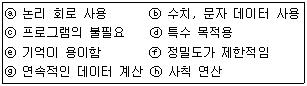
- ⓐ,ⓑ,ⓔ,ⓗ
- ⓑ,ⓓ,ⓕ,ⓗ
- ⓐ,ⓒ,ⓓ,ⓕ
- ⓑ,ⓒ,ⓔ,ⓖ
(정답률: 57%)
43. 다음 중 메인보드에 대한 설명으로 옳지 않은 것은?
- 칩셋에는 메인보드 내의 여러 장치를 통합 제어하기 위한 정보가 들어 있다.
- AGP는 모듈 램을 장착하는 소켓이다.
- USB 포트는 최대 127개의 주변 장치를 연결할 수 있다.
- 시스템 버스에는 제어 버스, 데이터 버스, 주소 버스가 있다.
(정답률: 33%)
44. 다음 중 아래에서 운영체제에 대한 옳은 설명으로만 짝지어진 것은?
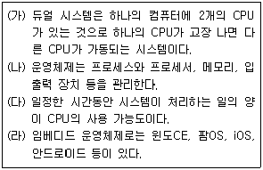
- 가, 나
- 나, 다
- 가, 다
- 나, 라
(정답률: 36%)
45. 다음 중 로더(Loader)의 기능에 해당하지 않는 것은?
- 재배치(Relocation)
- 할당(Allocation)
- 링킹(Linking)
- 번역(Compile)
(정답률: 45%)
46. 다음 중 레지스터에 대한 설명으로 옳지 않은 것은?
- 연산된 결과를 임시로 저장하는 레지스터를 상태 레지스터라 한다.
- 명령 레지스터는 현재 실행중인 명령어를 기억하는 기능을 한다.
- 레지스터는 CPU 내부에서 처리할 명령어나 연산의 중간 결과 값 등을 일시적으로 기억하는 임시 기억 장소이다.
- 데이터 레지스터는 연산에 사용될 데이터를 기억하는 기능을 한다.
(정답률: 38%)
47. 다음 중 기억장치에 대한 설명으로 옳지 않은 것은?
- 주기억장치는 컴퓨터 내부에 위치한 기억장치로 현재 사용 중인 데이터나 프로그램이 저장된다.
- ROM은 내장 메모리를 체크하거나 주변 장치의 초기화를 수행하기 위한 자료 등을 저장한다.
- 캐시메모리는 주기억장치와 CPU의 속도 차이를 보완하며, 주기억장치의 정보를 일시적으로 저장한다.
- 가상메모리는 주기억장치의 일부를 보조기억장치인 것처럼 사용한다.
(정답률: 30%)
48. 다음 중 운영체제의 커널(Kernel)에 대한 설명으로 옳지 않은 것은?
- 컴퓨터의 하드웨어와 직접 상호작용하는 모듈이다.
- 제어 프로그램 중 주기억장치에 상주하는 모듈이다.
- 운영체제를 구성하는 프로세스와 운영체제의 제어 아래에서 수행하는 프로그램에 대한 자원할당을 수행한다.
- ROM BIOS에 저장되어 입출력을 수행하는 모듈이다.
(정답률: 36%)
49. 다음 중 웜(Worm) 바이러스에 대한 설명으로 옳지 않은 것은 ?
- 일반적인 바이러스와는 다르게 다른 프로그램을 감염시키지 않는다.
- 컴퓨터 시스템을 파괴하거나 작업을 지연 또는 방해하는 악성프로그램이다.
- 메모리에 상주하며 백신프로그램의 진단 과정을 방해하여 치료를 어렵게 한다.
- 네트워크에서 자신을 복제하며 전파하는 능력을 가지고 있다.
(정답률: 28%)
50. 다음 중 바이오스(BIOS)의 역할로 옳지 않은 것은?
- POST
- 시스템 초기화
- 디스크 조각 모음
- 디스크 부트
(정답률: 42%)
51. 다음 중 유비쿼터스 환경과 가장 관련이 깊은 기술은?
- RFID/USN 기술
- 풀(Pull) 기술
- 캐싱(Cashing) 기술
- 미러 사이트(Mirror Site) 기술
(정답률: 42%)
52. 다음 중 아래의 설명에 해당하는 용어는?
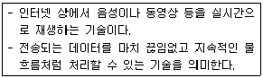
- 샘플링(sampling)
- 스트리밍(streaming)
- 로딩(loading)
- 시퀀싱(sequencing)
(정답률: 61%)
53. 다음 중 인터넷 서비스 사용 시 지켜야 할 예절로 가장 적절하지 않은 것은?
- 게시판에 글을 올릴 경우에는 가급적 인터넷 약어를 사용하여 간결하게 작성한다.
- 웹 사이트 운영자는 가능한 많은 정보를 공개하고 웹 접근성을 높인다.
- 공개 자료실에는 가급적 압축한 자료를 올린다.
- 전자우편을 사용할 경우 제목만 보고도 중요도와 내용을 알 수 있도록 작성한다.
(정답률: 54%)
54. 다음 중 데이터 전송에 대한 설명으로 옳지 않은 것은?
- 반이중 통신은 TV, 라디오와 같이 한쪽은 수신만 다른 한쪽은 송신만 가능하다.
- 직렬 전송은 모든 비트들이 동일한 전송선을 사용하기 때문에 병렬 전송보다 오류 발생이 적으며 원거리 전송에 적합하다.
- 동기식 전송은 미리 정해진 수만큼의 문자열을 한묶음으로 만들어서 일시에 전송하는 방식이다.
- 전이중 통신은 전화나 비디오텍스 등과 같이 동시에 양쪽 방향에서 전송이 가능한 방식이다.
(정답률: 34%)
55. 다음 중 정보통신망에 대한 설명으로 옳지 않은 것은?
- VAN : 공중 통신 사업자로부터 회선을 빌려 독자적인 네트워크를 구성하여 부가가치가 높은 서비스를 하는 통신망이다.
- VDSL : 전화선을 이용하여 양방향으로 거의 동일하게 빠른 속도로 데이터를 전송하는 초고속 인터넷 서비스이다.
- VPN : 이동 중인 버스나 지하철 안에서 초고속 인터넷을 이용할 수 있는 무선 네트워크 서비스이다.
- LAN : 자원 공유를 목적으로 전송 거리가 짧은 구내에서 사용하는 통신망이다.
(정답률: 41%)
56. 다음 중 아래의 설명에 해당하는 용어는?
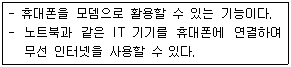
- 와이브로(WiBro)
- 블루투스(Bluetooth)
- 테더링(Tethering)
- 3G(3Generation)
(정답률: 43%)
57. 다음 중 전자상거래의 장점으로 적절하지 않은 것은?
- 시간과 공간적인 제약이 없다.
- 보안의 문제없이 언제나 안전한 거래를 할 수 있다.
- 유통 비용과 건물 임대료 등의 운영비를 절감할 수 있다.
- 각 쇼핑몰의 가격을 비교하여 가장 저렴한 상품의 구매가 가능하다.
(정답률: 55%)
58. 아래는 멀티미디어 활용에 대한 설명이다. 다음 중 ⓐ, ⓑ의 괄호 안에 들어갈 용어를 순서대로 올바르게 나열한 것은?
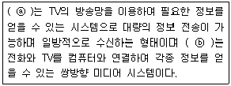
- ⓐ 비디오텍스(Videotex), ⓑ 텔레텍스트(Teletext)
- ⓐ 텔레텍스트(Teletext), ⓑ 주문형 비디오(VOD)
- ⓐ 비디오텍스(Videotex), ⓑ 스트리밍(Streaming)
- ⓐ 텔레텍스트(Teletext), ⓑ 비디오텍스(Videotex)
(정답률: 36%)
59. 다음 중 아래의 설명에 해당하는 용어는?
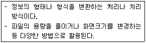
- 인코딩(encoding)
- 리터칭(retouching)
- 렌더링(rendering)
- 디코더(decoder)
(정답률: 37%)
60. 다음 중 인터넷 상에서 보안을 위협하는 유형에 대한 설명으로 옳지 않은 것은 ?
- 파밍(Pharming) : 스미싱의 발전된 형태로 사용자 동의없이 사용자 정보를 수집하는 프로그램.
- 분산서비스 거부 공격(DDoS) : 데이터 패킷을 범람 시켜 시스템의 성능을 저하시킴.
- 스푸핑(Spoofing) : 신뢰성 있는 사람이 데이터를 보낸 것처럼 데이터를 위변조하여 접속을 시도
- 스니핑(Sniffing) : 네트워크 상에서 전달되는 패킷을 엿보면서 사용자의 계정과 패스워드를 알아 냄.
(정답률: 35%)